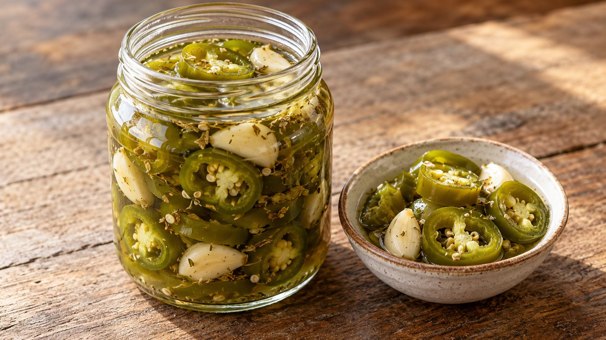

Refrigerator Pickled Jalapeños
Mexican · Refrigerator pickling · About 25 min active prep; total estimate 24 hr 25 min including chilling. Follow the doneness endpoint rather than the clock.
Yield: About 2–3 pint containers; yield varies

Ingredients
- 1 lb jalapeños, washed and sliced into ¼-inch rings
- 1½ cups distilled white vinegar labeled 5% acidity
- 1½ cups water
- 1 tbsp canning or pickling salt
- 2 tbsp sugar
- 2 garlic cloves, peeled and halved
- 1 tsp dried Mexican oregano
Directions
- Wear gloves to trim and slice the peppers. Wash hands, utensils and two heat-safe pint containers; check that the containers are intended for hot liquids.
- In a saucepan, bring vinegar, water, salt, sugar, garlic and oregano to a boil, stirring to dissolve. Add pepper rings and simmer 3 minutes.
- Ladle peppers and brine into the containers. Keep peppers covered with brine; divide between additional containers if needed rather than overpacking or adding plain water.
- Refrigerate promptly in small containers; do not leave on the counter until completely cold. Once chilled, cover securely. Chill 24 hours for flavor, then serve with clean utensils.
Notes & serving ideas
An original taco topping, not a canning formula. Banana peppers or pepperoncini may replace jalapeños for a milder refrigerated version; serranos are hotter. Do not reduce vinegar strength. This three-day household limit is conservative, not a validated pickle shelf life.
Harvest reference batch: 1 lb jalapeños. Only this primary crop is deducted; secondary ingredients and finished yields are not calculated.
Review & safe storage
Original recipe: Family Recipes culinary preparation informed by the references below; the exact formula and storage life have not been laboratory validated or kitchen-tested here. References do not validate it for canning.
Keep at 40°F (4°C) or below. Use within 3 days as a conservative household limit, not a tested shelf life. This recipe is not shelf-stable; do not can it or leave it out to ferment.
Work with clean hands, sound produce and clean equipment. Refrigerate prepared perishables promptly, within 2 hours (1 hour above 90°F / 32°C); cool hot mixtures in shallow small containers. Never thaw perishables on the counter.